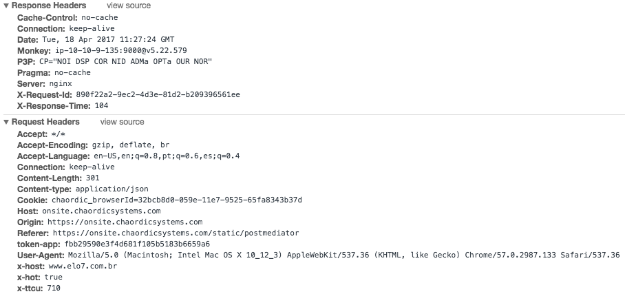
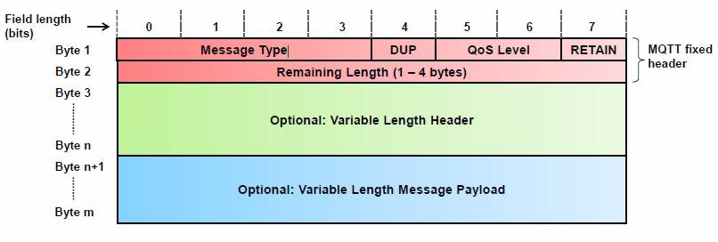
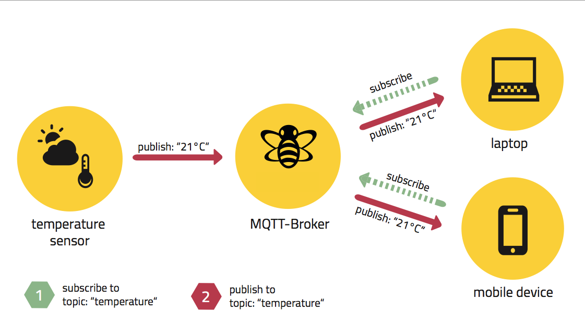
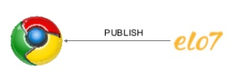
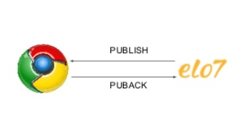
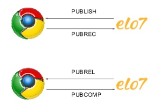
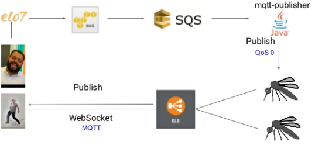

Arquiteturas para aplicações realtime utilizando MQTT
Publicado em:
@cristianoperez
Neste post vamos explicar alguns modelos arquiteturais para desenvolver um chat em realtime que deve atender às seguintes especificações:
- Mensagem 1-N: apenas o usuário que recebeu a mensagem deve receber a notificação de nova mensagem;
- Realtime: o chat do destinatário deve ser atualizado sem nenhuma ação por parte do usuário;
- Lightspeed: todo o processo de envio e recebimento deve ser rápido e consumir o mínimo possível de recursos de todos os componentes (remetente, destinatário e servidor).
Quando temos como objetivo o desenvolvimento de uma aplicação realtime com essas características, com rápidas pesquisas (ou no caso de um leitor mais experiente, que verá essas opções como óbvias), podemos encontrar alguns modelos arquiteturais, como Short Polling, Long Polling, WebSocket. A seguir discutiremos as vantagens e desvantagens de cada um:
Short Polling
Nesse modelo, o cliente faz requisições periódicas para o servidor. Entre as opções, é o mais fácil e rápido de ser implementado.
Sua simplicidade pode ser vista nesse trecho de pseudo-código que simula requisições para buscar uma mensagem em uma conversa:
while (true) {
fetch("http://localhost:8080/conversa/1/messages").then(msgs => {
// trata a lista de novas mensagens
});
}
Simples, fácil e rápido! Porém gera um enorme overhead, tanto no servidor como no cliente, já que o cliente faz requisições ao servidor mesmo que este não tenha nada de novo, o que acaba degradando a performance!
Imagine agora o cenário onde cerca de 10 mil usuários estão conectados à sua aplicação. Supondo que cada usuário possua em média 3 conversas abertas, teremos o equivalente a 30 mil requisições por segundo sendo enviadas ao servidor (ou 1.8 milhões de requisições por minuto), sendo que a maioria delas não resultará em nada. Assim, no cenário descrito e com o uso de Short Polling, precisaremos contar com muitos recursos para atender a essa enorme quantidade de requisições ou nossos servidores ficarão indisponíveis (uma espécie de ataque DDoS, só que a nós mesmos).
Long Polling
É muito parecido com o Short Polling, porém nesse cenário o servidor, em vez de retornar respostas vazias às requisições quando não há nada novo, "segura" cada conexão, mantendo-a aberta até efetivamente ter algo novo. Apesar de funcionar muito bem, e resultar em um número menor de requisições, você pode esgotar rapidamente os recursos (CPU/memória/threads) do servidor.
WebSocket + HTTP
Como o protocolo HTTP 1.X é stateless e de via única, fica difícil para o servidor informar o cliente que um determinado evento ocorreu e é necessário um refresh parcial ou em toda a página. Para isso existe o protocolo WebSocket, que resolve esse problema estabelecendo uma conexão entre cliente e o servidor. O WebSocket define como conectar, mas não como enviar ou receber mensagens (não é um protocolo de transporte). Então, podemos usar o protocolo HTTP para mandar mensagens por meio de uma conexão WebSocket.
Assim, o servidor consegue comunicar-se com o browser, e o browser reagir sem intervenção do usuário a cada mensagem enviada pelo servidor.
Porém, no protocolo HTTP temos um overhead de headers.  Bastante coisa não!? Um dos requisitos para desenvolvermos aplicações realtime é que elas sejam Lightspeed. Esse overhead, portanto, é prejudicial, já que aumenta consideravelmente o tamanho da mensagem e consome mais banda e bateria que o necessário (principalmente se considerarmos o desenvolvimento de mobile apps). Segundo um estudo do Google, a maior parte das aplicações transporta nos headers de suas requests cerca de 200 bytes à 2KB (na média esse valor mantém-se entre 700 ~ 800 bytes)
~ $ curl -s -w \%{size_header} -o /dev/null www.elo7.com.br
438 bytes
WebSocket + MQTT
MQTT é um protocolo de transporte que utiliza o pattern publisher/subscriber. É leve, aberto, simples e desenhado para ser fácil de implementar, e essas características fazem dele a melhor escolha quando se trata de comunicação Machine to Machine (M2M) e Internet das Coisas (IoT, do termo em inglês Internet of Things).
Essa tecnologia foi criada em 1999 por um engenheiro da IBM, com o intuito de conectar dutos de óleo a satélites, com o objetivo de enviar métricas, possibilitando gerenciar remotamente esses dutos. Os requisitos para o desenvolvimento utilizando o protocolo MQTT dizem que ele deve ser e/ou ter:
- Simples de implementar;
- Garantia de entrega (QoS);
- Leve e utilizar a banda eficientemente;
- Data Agnostic (dados que podem ser enviados e recebidos independente da linguagem);
- Continuous Session Awareness (o estado da sessão deve ser preservado no disconnect/reconnect);
- Pub/Sub.
O MQTT resolve o problema do overhead de headers que temos no HTTP. É possível enviar uma mensagem com um header de apenas 2 bytes. Abaixo temos o formato da requisição:

Na tabela abaixo temos uma comparação entre MQTT e HTTP (fonte):
| Cenário | HTTP | MQTT |
|---|---|---|
| GET | 302 bytes | 69 bytes (~4x) |
| POST | 320 bytes | 47 bytes (~7x) |
| GET 100x | 12600 bytes | 2445 bytes (~5x) |
| POST 100x | 14100 bytes | 2126 bytes (~7x) |
Pub/Sub
Uma das vantagens do Pub/Sub é o desacoplamento, uma vez que o publisher não precisa saber para quais ou quantos clientes uma mensagem será enviada. Isso é possível graças ao MQTT Broker. O broker filtra as mensagens baseado em tópicos. Cada cliente pode se inscrever em um ou mais tópicos. Quando uma mensagem é enviada, ela é destinada a um tópico específico, e todos os clientes inscritos no tópico de destino recebem a mensagem.

Broker e Cliente
Broker
É o coração e o cérebro do MQTT. É o responsável por receber e enviar as mensagens para os clientes corretos, pela garantia de entrega (QoS) e session. Algumas implementações têm features adicionais como segurança, clusterização e suporte a WebSocket.
Cliente
É a lib que vai ficar dentro da sua aplicação, é a responsável por se conectar, enviar e receber as mensagens do broker. Os clientes estão disponível em diversas linguagens e frameworks como Java, Javascript, .NET, C++, Go, Objective-C, Swift, etc. Isso quer dizer que tanto aplicações web até pequenos dispositivos IoT (como sensores de temperatura) podem enviar e receber mensagens. O cliente se conecta com o broker enviando uma mensagem de CONNECT e o broker deve responder com CONNACK. Após a conexão ser estabelecida, ela é mantida aberta até o cliente se desconectar ou perder a conexão.
Quality of Service (QoS)
QoS é o nível de garantia de entrega das mensagens entre cliente e servidor.
Existem 3 níveis:
QoS 0 - At most once (no máximo uma vez)

Garante o menor nível de entrega, também chamado de fire and forget. É o mais rápido e consome menos banda, mas representa a menor garantia de entrega entre todos. Seu ciclo de vida é composto apenas pelo envio de uma mensagem pelo cliente ao broker.
QoS 1 - At least once (ao menos uma vez)

Garante que a mensagem será enviada pelo menos uma vez ao broker. Após a mensagem ser enviada, o cliente guarda essa mensagem até receber o PUBACK do broker, Caso o PUBACK não seja recebido em um determinado tempo, o cliente envia outro PUBLISH. Pelo lado do broker, quando ele recebe um PUBLISH com QoS 1, a mensagem é processada de imediato enviando para todos os SUBs e respondendo para o cliente com o PUBACK.
O cliente utiliza o packetId que é retornado no PUBACK para fazer a associação entre PUBLISH e PUBACK.
QoS 2 - Exactly once (exatamente uma vez)

Garante que cada mensagem é recebida pelo menos uma vez pelo destinatário. Dos três tipos descritos é o que possui a maior garantia de entrega, porém, é o mais lento.
Devemos ter em mente que, quanto maior o nível de QoS, mais trocas de mensagens são feitas. Isso afeta o tempo que a mensagem leva para ser efetivamente entregue, e pode levar a um aumento do uso da banda de rede e bateria em dispositivos móveis.
Arquitetura realtime do Elo7

A imagem acima é um resumo de como utilizamos o MQTT + WebSocket no Elo7. Podemos separar o que acontece nas seguintes etapas:
- O comprador envia uma mensagem para o vendedor
Quando uma mensagem é enviada, várias operações secundárias são executadas em segundo plano (envio de métricas, captura de eventos, push notifications, etc) a fim de não comprometer a operação principal, que é persistir a mensagem. Realizamos essas operações de maneira assíncrona, enfileirando uma mensagem no SQS. O mqtt-publisher é o worker responsável pelo processamento das mensagens da fila, publicando-as no tópico adequado no broker MQTT (no nosso caso, utilizamos o Mosquitto).
- O vendedor recebe a mensagem
Ao receber uma mensagem, o client do vendedor se conecta ao Mosquitto (via WebSocket) e se inscreve (sub) no tópico daquela conversa. No browser, isso é feito utilizando o client MQTT pahoJS. Dessa forma, ao receber uma nova mensagem do comprador, a conversa é atualizada sem nenhuma interação (ex: atualização da página) por parte do vendedor.
Conclusão
Foi demonstrado que existem certas vantagens ao se adotar o MQTT com WebSocket, porém nem tudo são unicórnios e arco-íris. Os custos para ter realtime são maiores em todos os aspectos (infra, manutenção, tempo de desenvolvimento e complexidade).
Caso decida por MQTT, é necessário ter um bom conhecimento do broker escolhido, conhecer suas vantagens e desvantagens em relação aos outros, como irá escalar sua aplicação no futuro, como trabalhar com brokers distribuídos e também segurança (afinal, não queremos que o usuário tenha acesso às mensagens que não são destinadas a ele).
Enfim, esperamos que essa análise possa ajudar os leitores na escolha da arquitetura ideal. Lembrando que essa escolha depende de muitos outros fatores, como análise do negócio, retorno do investimento, se a funcionalidade realmente precisa ser realtime e mais características internas da empresa/time envolvido.